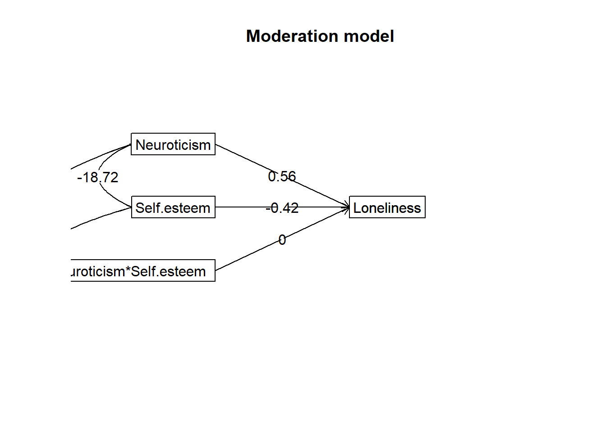

1 - Use RStudio to carry out a simple linear regression (forced-entry)
2 - Use RStudio to carry out a hierarchical regression
3 - Use RStudio to perform a mediated regression
4 - Use RStudio to perform and report a moderation analysis
Materials Used:
We will use the packages interactions, knitr, rstatix, effectsize, ppcor, and psych these are already installed on the RStudio Server but if you are working on your own Laptop you may need to install them.
CREATE A NEW PROJECT
Just as we did in previous weeks we are going to start by creating a new project for this week’s lab. Download the data from the VLE (In the Week 5 Homework Materials section) and then copy it in the folder you created your project in. You can also find a direct download link for the data here: Github Link.
If you are working on the RStudio Server, then you will need to download the file to your computer and then upload it to the correct folder on the server.
Also create a new script in this folder so you can copy the lines of code needed to run this analysis yourself using just that script.
SECTION A. THE DATASET
A researcher was interested in the extent to which loneliness was related to self-esteem and the personality trait of neuroticism. They collected self-report questionnaire data for each of these constructs from 257 participants, along with their age and gender (1=Male, 2=Female). Higher scores on each of the continuous measures equated to higher levels of the construct.
First load the data as usual and correctly set up the Gender variable as a factor. The code is not shown here as this should be familiar to you but it will be included in the model answers released at the end of the week.
We need to check if there are any missing data and create a new data with only complete rows.
What is the required code to do this?
summary(df)
Gender Age Self.esteem Neuroticism Loneliness
Male : 62 Min. :18.00 Min. : 8.00 Min. : 4.00 Min. :27.00
Female:195 1st Qu.:18.00 1st Qu.:26.00 1st Qu.:17.00 1st Qu.:39.00
Median :20.00 Median :32.00 Median :22.00 Median :47.00
Mean :21.78 Mean :29.91 Mean :22.93 Mean :46.74
3rd Qu.:22.00 3rd Qu.:36.00 3rd Qu.:28.00 3rd Qu.:54.00
Max. :51.00 Max. :38.00 Max. :50.00 Max. :68.00
NAs :1
#this shows one missing value from AgedfTrim <- df[complete.cases(df),]
SECTION B. CORRELATION & REGRESSION
Summarise the bivariate relationships between each of these three variables by looking at the correlation matrix.
var1 var2 cor p
1 Self.esteem Age 0.0860 1.688951e-01
2 Neuroticism Age 0.0059 9.249851e-01
3 Loneliness Age -0.0690 2.739902e-01
4 Neuroticism Self.esteem -0.3200 2.258538e-07
5 Loneliness Self.esteem -0.4400 2.789192e-13
6 Loneliness Neuroticism 0.5900 2.440543e-25
#note we have to do 2:5 as we only want the numeric columns
The correlation matrix shows that the self-esteem variable is negatively and significantly related to both neuroticism and loneliness, and the loneliness variable is significantly and positively related to neuroticism. Each of the correlations is in the moderate to large range, using Cohen’s rules of thumb.
However, Age is not significantly correlated with any of the personality variables. Remember that 1.688951e-01 is the same as 0.1688951, the e-01 part at the end means to shift the decimal point by one digit to the left.
We are going to skip the rest of the screening, cleaning and assumption checks here for the sake of brevity but you should always do them when analysing your own data.
Run a standard multiple regression model with neuroticism and self-esteem predicting loneliness. What do the results suggest?
The following object is masked from 'package:rstatix':
select
sr2 <-spcor(dfTrim[,3:5])$estimate["Loneliness", ]^2#note we are using 3:5 #to only include columns of the three variables used in the model
The results suggest that neuroticism and self-esteem account for significant variance in loneliness, R2 = 0.42, F(2, 254) = 90.59, p < .0001. Neuroticism is a significant and positive predictor of loneliness, \(\beta\) = 0.50, t = 9.93, p < .0001, sr2 = 0.23, while self-esteem is a significant and negative predictor of loneliness, \(\beta\) = -0.28, t = -5.47, p < .0001, sr2 = 0.07. The semi-partial correlations suggest around 13% of the variance in loneliness is shared by neuroticism and self-esteem as 6.8% is unique to Self Esteem, 22.6% is unique to Neuroticism.
42-(22.6+6.8)
[1] 12.6
Below is an example of how to use knitr to produce a nice table of these:
The researcher thought they best control for age and gender too. Run a hierarchical multiple regression model that would appropriately control for the effect of age and gender. Contrast the results with your summary from the previous question.
Here we can run a hierarchical regression model, with age and gender entered in the first step of the model, and then self-esteem and neuroticism entered in the second step of the model.
#first blockmdl1 <-lm(Loneliness ~ Age + Gender, dfTrim)#second blockmdl2 <-lm(Loneliness ~ Age + Gender + Neuroticism + Self.esteem, dfTrim)#summary and standardised beta for block 1summary(mdl1)
Call:
lm(formula = Loneliness ~ Age + Gender, data = dfTrim)
Residuals:
Min 1Q Median 3Q Max
-21.0910 -7.3617 0.0176 7.4262 21.4262
Coefficients:
Estimate Std. Error t value Pr(>|t|)
(Intercept) 52.3906 2.8018 18.699 <2e-16 ***
Age -0.1500 0.1074 -1.396 0.1639
GenderFemale -3.1171 1.4665 -2.126 0.0345 *
---
Signif. codes: 0 '***' 0.001 '**' 0.01 '*' 0.05 '.' 0.1 ' ' 1
Residual standard error: 9.894 on 253 degrees of freedom
Multiple R-squared: 0.02217, Adjusted R-squared: 0.01444
F-statistic: 2.868 on 2 and 253 DF, p-value: 0.05865
Analysis of Variance Table
Model 1: Loneliness ~ Age + Gender
Model 2: Loneliness ~ Age + Gender + Neuroticism + Self.esteem
Res.Df RSS Df Sum of Sq F Pr(>F)
1 253 24767
2 251 14725 2 10041 85.582 < 2.2e-16 ***
---
Signif. codes: 0 '***' 0.001 '**' 0.01 '*' 0.05 '.' 0.1 ' ' 1
#get the change in R2deltaR2 <-summary(mdl2)$r.squared-summary(mdl1)$r.squareddeltaR2
[1] 0.3964556
In sum, age and gender have little influence on loneliness, and the substantive results from the previous question are not greatly modified when including age and gender in the model. Gender and age accounted for only 2% of the variance in loneliness on their own in the first step of the model, R2 = 0.02, F(2, 253) = 2.87, p = .059. Age did not significantly predict loneliness, while gender did significantly predict loneliness, \(\beta\) = -0.31, t = -2.13, p = .035, with males having higher loneliness scores than females.
The addition of self-esteem and neuroticism to the model accounted for an additional 40% variance in loneliness, which was significant, \(\Delta\)R2 = 0.40, F(2, 251) = 85.58, p < .0001. In the second step of the model, gender was no longer a significant predictor of loneliness, while self-esteem and neuroticism were significant predictors, with the regression coefficients very similar to those shown in the previous question.
SECTION D. MEDIATION
The researcher then decided to test whether self-esteem mediates the relationship between neuroticism and loneliness. Run an appropriate series of regression analyses to see if this is the case.
If we use the Baron and Kenny four steps approach:
Step 1 check if the IV predicts the outcome variable. Neuroticism is a robust positive predictor of loneliness b = 0.66, \(\beta\) = 0.59, t = 11.63, p < .0001:
Step 2 check if the mediator predicts the outcome variable; self-esteem is a robust negative predictor of loneliness, b = -0.65, \(\beta\) = -0.44, t = -7.71, p < .0001
Step 3 We then check if the IV predicts the mediator; neuroticism is a robust negative predictor of self-esteem, b = -0.24, \(\beta\) = -0.32, t = -5.32, p < .0001.
Step 4 We see if the regression coefficient for neuroticism predicting loneliness, shrinks when we add self-esteem to the model. The neuroticism regression coefficient does decrease in the presence of self-esteem, albeit the decrease is quite modest ie b = 0.66 versus b = 0.56 (or \(\beta\) = 0.59 versus \(\beta\) = 0.50). The drop in the unstandardised b value of 0.1 is the size of the indirect effect.
The next stage would be to conduct a Sobel test to check if this decrease was significant. That is possible in base R but requires some coding:
a <-coef(mdlC)["Neuroticism"]sa <-summary(mdlC)$coefficients["Neuroticism", "Std. Error"]b <-coef(mdlD)["Self.esteem"]sb <-summary(mdlD)$coefficients["Self.esteem", "Std. Error"]indirect <- a * bse_sobel <-sqrt(b^2* sa^2+ a^2* sb^2)z <- indirect / se_sobelp <-2*pnorm(-abs(z))c(indirect =unname(indirect), SE =unname(se_sobel), z =unname(z), p =unname(p))
indirect SE z p
0.0981326159 0.0257396724 3.8125044699 0.0001375657
The Sobel test here is significant, z = 3.81, p < .001, so we could say here that self-esteem does mediate the relationship between neuroticism and loneliness (notwithstanding major concerns we would have assuming causal relationships here). However, the indirect effect is a modest part of the total effect (about 0.10 / 0.66, or roughly 15%), so the conclusion is that most of neuroticism’s association with loneliness is not accounted for by self-esteem.
Instead we can use the mediate() function from the psych package to do all of this for us, as a bonus this uses bootstrapping as a way to estimate if the mediation effect is significant. It also produces a nice mediation diagram showing the path strengths (in terms of unstandardised b values)
library(psych)
Attaching package: 'psych'
The following object is masked from 'package:effectsize':
phi
Mediation/Moderation Analysis
Call: mediate(y = Loneliness ~ Neuroticism + (Self.esteem), data = dfTrim,
n.iter = 5000)
The DV (Y) was Loneliness . The IV (X) was Neuroticism . The mediating variable(s) = Self.esteem .
Total effect(c) of Neuroticism on Loneliness = 0.66 S.E. = 0.06 t = 11.63 df= 254 with p = 2.4e-25
Direct effect (c') of Neuroticism on Loneliness removing Self.esteem = 0.56 S.E. = 0.06 t = 9.91 df= 253 with p = 9.1e-20
Indirect effect (ab) of Neuroticism on Loneliness through Self.esteem = 0.1
Mean bootstrapped indirect effect = 0.1 with standard error = 0.02 Lower CI = 0.05 Upper CI = 0.15
R = 0.65 R2 = 0.42 F = 90.21 on 2 and 253 DF p-value: 1e-39
Full output
Call: mediate(y = Loneliness ~ Neuroticism + (Self.esteem), data = dfTrim,
n.iter = 5000)
Direct effect estimates (traditional regression) (c') X + M on Y
Loneliness se t df Prob
Intercept 46.28 2.99 15.47 253 1.94e-38
Neuroticism 0.56 0.06 9.91 253 9.11e-20
Self.esteem -0.42 0.08 -5.46 253 1.11e-07
R = 0.65 R2 = 0.42 F = 90.21 on 2 and 253 DF p-value: 2.66e-30
Total effect estimates (c) (X on Y)
Loneliness se t df Prob
Intercept 31.62 1.40 22.65 254 6.72e-63
Neuroticism 0.66 0.06 11.63 254 2.44e-25
'a' effect estimates (X on M)
Self.esteem se t df Prob
Intercept 35.31 1.09 32.34 254 4.96e-92
Neuroticism -0.24 0.04 -5.32 254 2.26e-07
'b' effect estimates (M on Y controlling for X)
Loneliness se t df Prob
Self.esteem -0.42 0.08 -5.46 253 1.11e-07
'ab' effect estimates (through all mediators)
Loneliness boot sd lower upper
Neuroticism 0.1 0.1 0.02 0.05 0.15
The Baron and Kenny steps are a good way to understand what we are looking for in a mediation analysis, but the modern emphasis is on the indirect effect’s CI rather than the “shrinkage” comparison in step 4 and bootstrapping is generally a more modern approach.
We could write this up as:
The indirect effect of neuroticism on loneliness via self-esteem was significant, ab = 0.10, 95% bootstrap CI [0.06, 0.15] (unstandardised ab = 0.098). The direct effect remained significant, c’ = 0.56, p < .001, indicating partial mediation. Self-esteem accounted for approximately 15% of the total effect (ab/c = 0.10/0.66)
SECTION E. MODERATION & WRITE-UP
They also wanted to test if self-esteem was a moderator of the relationship between neuroticism and loneliness. How might they test this? What would they find in this data?
We can follow the methodology of the lab, however, instead of using scale() to z-score the data I am going to mean centre it here to demonstrate this alternative. I’m also going to use the hierarchical approach where in the first block we add the predictors and then in the second we add the interaction.
#make a copydfC <- dfTrim#substract the mean of each variable from all the other valuesdfC$Self.esteem <- dfC$Self.esteem-mean(dfC$Self.esteem) dfC$Neuroticism <- dfC$Neuroticism-mean(dfC$Neuroticism)#check the means are 0mean(dfC$Self.esteem)
[1] 0
mean(dfC$Neuroticism)
[1] 0
#model with the predictorsmdlMod1 <-lm(Loneliness ~ Self.esteem + Neuroticism, dfC)#model including the interactionmdlMod2 <-lm(Loneliness ~ Self.esteem + Neuroticism + Self.esteem:Neuroticism, dfC)#compare the modelsanova(mdlMod1,mdlMod2)
Analysis of Variance Table
Model 1: Loneliness ~ Self.esteem + Neuroticism
Model 2: Loneliness ~ Self.esteem + Neuroticism + Self.esteem:Neuroticism
Res.Df RSS Df Sum of Sq F Pr(>F)
1 253 14785
2 252 14783 1 1.2511 0.0213 0.884
Call:
lm(formula = Loneliness ~ Self.esteem + Neuroticism + Self.esteem:Neuroticism,
data = dfC)
Residuals:
Min 1Q Median 3Q Max
-23.0605 -4.4837 -0.2417 4.6696 22.8659
Coefficients:
Estimate Std. Error t value Pr(>|t|)
(Intercept) 46.772040 0.501930 93.184 < 2e-16 ***
Self.esteem -0.417254 0.077292 -5.398 1.55e-07 ***
Neuroticism 0.561399 0.056869 9.872 < 2e-16 ***
Self.esteem:Neuroticism 0.001182 0.008093 0.146 0.884
---
Signif. codes: 0 '***' 0.001 '**' 0.01 '*' 0.05 '.' 0.1 ' ' 1
Residual standard error: 7.659 on 252 degrees of freedom
Multiple R-squared: 0.4163, Adjusted R-squared: 0.4094
F-statistic: 59.92 on 3 and 252 DF, p-value: < 2.2e-16
We can see that adding the interaction variable accounts for almost no additional variance \(\Delta\)R2 = 0.00005 and that the Self.esteem:Neuroticism interaction term is not significant b = 0.001, t = 0.146, p = 0.884. So we have no evidence of a moderation effect here.
Normally, we would not bother to run a simple slopes analysis given the above, but in this case if we examine the simple slopes plot we can see there is no interaction between these variables at all.
However, we can also use the mediate() function to perform all of this for us:
mod <-mediate(Loneliness ~ Neuroticism * Self.esteem,data = dfTrim,n.iter =5000)

print(mod, short =FALSE)
Mediation/Moderation Analysis
Call: mediate(y = Loneliness ~ Neuroticism * Self.esteem, data = dfTrim,
n.iter = 5000)
The DV (Y) was Loneliness . The IV (X) was Neuroticism Self.esteem Neuroticism*Self.esteem . The mediating variable(s) = .Call: mediate(y = Loneliness ~ Neuroticism * Self.esteem, data = dfTrim,
n.iter = 5000)
No mediator specified leads to traditional regression
Loneliness se t df Prob
Intercept 0.02 0.50 0.04 252 9.65e-01
Neuroticism 0.56 0.06 9.87 252 1.21e-19
Self.esteem -0.42 0.08 -5.40 252 1.55e-07
Neuroticism*Self.esteem 0.00 0.01 0.15 252 8.84e-01
R = 0.65 R2 = 0.42 F = 59.92 on 3 and 252 DF p-value: 2.84e-29
An APA format writeup would be:
A hierarchical multiple regression was conducted to test whether self-esteem moderated the relationship between neuroticism and loneliness. Both predictors were mean-centred prior to analysis. In Block 1, neuroticism and self-esteem were entered, and in Block 2 their interaction term was added.
Block 1 explained a significant proportion of the variance in loneliness, R2 = .42, F(2, 253) = 90.21, p < .001. Neuroticism was a positive predictor, b = 0.56, SE = 0.06, and self-esteem a negative predictor, b = −0.42, SE = 0.08 (both p < .001).
Adding the neuroticism × self-esteem interaction in Block 2 did not significantly improve the model, \(\Delta\)R2 < .001, F(1, 252) = 0.02, p = .884. The interaction term was not significant, b = 0.001, SE = 0.008, t(252) = 0.15, p = .884. There was therefore no evidence that self-esteem moderated the association between neuroticism and loneliness. The effect of neuroticism on loneliness did not differ across levels of self-esteem, as the simple slopes plot also showed.